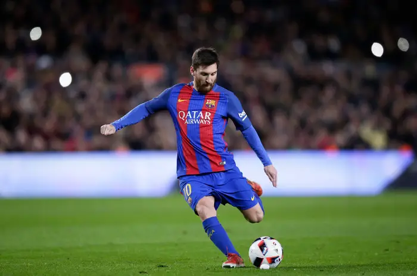

Learn how to shoot

Learn how to shoot
Shooting is one of the most critical skills in football because it is the ultimate deciding factor in winning matches. A team can dominate possession, execute flawless tactical passes, and control the midfield, but none of it matters without a clinical finish to put the ball in the back of the net. Scoring goals requires precision, split-second decision-making, strong technique, balance, and the composure to strike under immense defensive pressure. A successful shot is not only about power; players also need to understand placement, timing, body positioning, and when to choose different shooting techniques depending on the situation. For example, a player may need to use a powerful strike from long range, a controlled side-footed shot when close to goal, or a quick finish when there is little time to react. Players must also be able to remain calm when defenders are closing them down and make accurate decisions in a matter of seconds. Because every match can hinge on these defining moments, mastering various shooting techniques is essential for any player looking to make a true impact on the game. With regular training and repetition, players can improve their accuracy, power, confidence, and ability to finish chances in different situations. Developing strong shooting skills can also make a player more dangerous in attack and give their team a greater chance of scoring and winning matches.
Steps to shooting
1. Approach the ball at a slight angle. This gives your kicking leg a natural and powerful swing path while helping you maintain balance as you prepare to strike the ball.
2. Plant your non-kicking foot firmly beside the ball. Ensure your toes point in the direction you want the ball to travel. This helps guide your body and improves the accuracy and control of your shot.
3. Keep your head and knee directly over the ball. This prevents your body from leaning backwards and sending the shot over the crossbar. Staying balanced also helps you maintain better control throughout the shooting motion.
4. Lock your kicking ankle completely straight. Strike the centre of the ball using your boot laces for maximum power. Keeping your ankle firm helps transfer more force into the ball and produces a stronger strike.
5. Follow through towards your target after striking the ball. A strong follow-through helps generate additional power and keeps your body moving in the direction of the shot. This can also improve the accuracy and consistency of your finishing.
6. Practise shooting from different positions and distances. Try shooting with both feet, from inside and outside the penalty area, and under pressure from defenders. Regular practice will improve your confidence, technique, accuracy, and ability to finish chances during a real match.